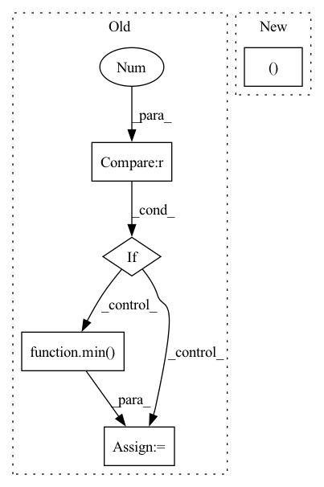

Pattern ID :3865
Before Change
param_group["weight_decay"] = cur_wd * param_group.get("weight_decay_scale", 1)
max_wd = max(max_wd, param_group["weight_decay"])
if param_group["weight_decay"] > 0 :
min_wd = min( min_wd, param_group["weight_decay"])
if min_lr == inf: min_lr = -1
if min_wd == inf: min_wd = -1
return min_lr, max_lr, min_wd, max_wdAfter Change
scaled_lr = param_group["lr"] = cur_lr * param_group.get("lr_scale", 1) // "lr_scale" could be assigned
min_lr, max_lr = min(min_lr, scaled_lr), max(max_lr, scaled_lr)
scaled_wd = param_group["weight_decay"] = cur_wd * param_group.get("weight_decay_scale", 1) // "weight_decay_scale" could be assigned
min_wd, max_wd = min(min_wd, scaled_wd), max(max_wd, scaled_wd)
return min_lr, max_lr, min_wd, max_wd
def get_param_groups(model, nowd_keys=()):In pattern: SUPERPATTERN
Frequency: 4
Non-data size: 5
Instances Fragment ID: 14623871
Project Name: keyu-tian/spark
Commit Name: f1b1d8fc1e2a7b9a1d0221c29f30cd3d80c2b54d
Time: 2023-02-18
Author: tiankeyu@bytedance.com
File Name: utils/lr_control.py
M Class Name: AnonimousClass
N Class Name: AnonimousClass
M Method Name: lr_wd_annealing(7)
N Method Name: lr_wd_annealing(7)
M Parent Class:
N Parent Class:
M File Name: utils/lr_control.py
N File Name: utils/lr_control.py
M Start Line: 23
M End Line: 37
N Start Line: 20
N End Line: 28
Before Change
runs with success, but needs further validation and possibly optimization for lower runtime impact.
if drop_prob == 0. or not training:
return x
_, _, height, width = x.shape
total_size = width * height
clipped_block_size = min(block_size, min( width, height) )
// seed_drop_rate, the gamma parameter
seed_drop_rate = gamma_scale * drop_prob * total_size / clipped_block_size ** 2 / (
(width - block_size + 1) *
(height - block_size + 1))
// Forces the block to be inside the feature map.
w_i, h_i = torch.meshgrid(torch.arange(width).to(x.device), torch.arange(height).to(x.device))
valid_block = ((w_i >= clipped_block_size // 2) & (w_i < width - (clipped_block_size - 1) // 2)) & \
((h_i >= clipped_block_size // 2) & (h_i < height - (clipped_block_size - 1) // 2))
valid_block = torch.reshape(valid_block, (1, 1, height, width)).float()
uniform_noise = torch.rand_like(x, dtype=torch.float32)
block_mask = ((2 - seed_drop_rate - valid_block + uniform_noise) >= 1).float()
block_mask = -F.max_pool2d(
-block_mask,
kernel_size=clipped_block_size, // block_size, ???After Change
padding=clipped_block_size // 2)
if with_noise:
normal_noise = torch.randn((1, C, H, W ), dtype=x.dtype, device=x.device) if batchwise else torch.randn_like(x)
if inplace:
x.mul_(block_mask).add_(normal_noise * (1 - block_mask))
else: Fragment ID: 14623868
Project Name: feng-lab/pytorch-image-models
Commit Name: 1904ed8fecdb3f37818378421350315d2abf1224
Time: 2020-05-13
Author: rwightman@gmail.com
File Name: timm/models/layers/drop.py
M Class Name: AnonimousClass
N Class Name: AnonimousClass
M Method Name: drop_block_2d(7)
N Method Name: drop_block_2d(6)
M Parent Class:
N Parent Class:
M File Name: timm/models/layers/drop.py
N File Name: timm/models/layers/drop.py
M Start Line: 25
M End Line: 62
N Start Line: 26
N End Line: 69
Before Change
// adjust the step size
if accepted and not t1_achieved:
if errnorm == 0 :
factor = self.max_factor
else:
factor = min( self.max_factor, self.step_mult * errnorm ** self.error_exponent)
if prev_rejected:
factor = min(1.0, factor)
After Change
rk_state = (fnew, tnew, ynew, h)
t1_achieved_all = bool(torch.all(t1_achieved).cpu().detach().item())
return rk_state, t1_achieved_all
class RK23(RKAdaptiveStepSolver):
error_estimator_order = 2
Fragment ID: 14623865
Project Name: xitorch/xitorch
Commit Name: c6f0785664d60d1310778d43f14a3464660ea4d9
Time: 2021-12-30
Author: firman.kasim@gmail.com
File Name: xitorch/_impls/integrate/ivp/adaptive_rk.py
M Class Name: RKAdaptiveStepSolver
N Class Name: RKAdaptiveStepSolver
M Method Name: _single_step(3)
N Method Name: _single_step(3)
M Parent Class: object
N Parent Class: object
M File Name: xitorch/_impls/integrate/ivp/adaptive_rk.py
N File Name: xitorch/_impls/integrate/ivp/adaptive_rk.py
M Start Line: 85
M End Line: 122
N Start Line: 125
N End Line: 165
Before Change
ff = ii + len(self.tokens[itok])
att = self.instance["attributions"][itok]
if att < 0 :
scaled_att = (-4 / min( self.instance["attributions"]) ) * att
elif att > 0:
scaled_att = (4 / max(self.instance["attributions"])) * att
else:After Change
ents = []
ii = 0
for token_rgb in self.heatmap:
token, rgb = token_rgb.values()
ff = ii + len(token)
ent = { Fragment ID: 14623860
Project Name: dfki-nlp/thermostat
Commit Name: 039dfada1e0a0b420665e7406907088422ee9c78
Time: 2021-06-14
Author: feldhusnlp@gmail.com
File Name: src/thermostat/data/dataset_utils.py
M Class Name: Thermounit
N Class Name: Thermounit
M Method Name: render(1)
N Method Name: render(1)
M Parent Class:
N Parent Class:
M File Name: src/thermostat/data/dataset_utils.py
N File Name: src/thermostat/data/dataset_utils.py
M Start Line: 96
M End Line: 117
N Start Line: 109
N End Line: 123